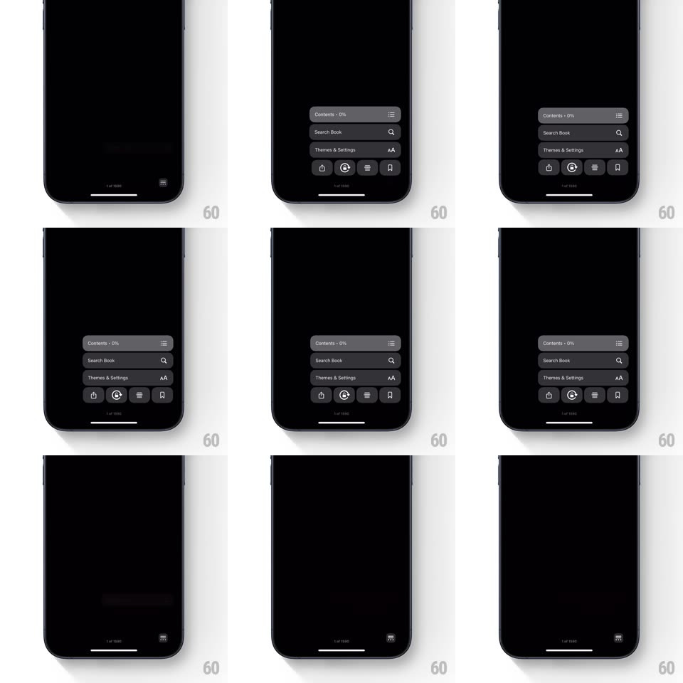

Media
Frame-by-frame

Rebuild this interaction 1:1: Apple Books' reading-menu collapse - the expanded bottom menu (Contents, Search Book, Themes & Settings plus a four-icon action row) folds back down into the single corner button that spawned it, rows collapsing in sequence.

Rebuild this interaction 1:1: Apple Books' reading-menu collapse - the expanded bottom menu (Contents, Search Book, Themes & Settings plus a four-icon action row) folds back down into the single corner button that spawned it, rows collapsing in sequence.
## Integration
Integration: stack-agnostic spec - springs given as stiffness/damping, timed motions as duration + curve; map every value to your framework and animation library of choice.
## Scene
Dark reading screen (sepia/black page, page indicator "1 of 1000" near the bottom). Bottom-right corner holds a small menu button (list icon). Tapping it expands a floating dark card above the corner: three full-width rows (Contents - 0%, Search Book with magnifier, Themes & Settings with AA) over a row of four circular icon buttons (share, play, text-size, bookmark).
## Motion spec
Pattern: stacked menu collapse into a corner button.
- Collapse runs bottom-up: the four-icon row fades and scales down first (~150ms), then the three rows fold in sequence from bottom row to top (~120ms each, 60ms stagger), each shrinking toward the corner button's anchor point.
- Each row's content fades as its container height collapses; the card's corner radius grows slightly as it shrinks, ending as the small circular corner button.
- The corner button's icon crossfades from close state back to the list glyph (~150ms).
- Expansion is the exact reverse: button morphs up into the card, rows pop open top-down with a slight spring (~320/24).
## Calibration
- Everything anchors to the bottom-right corner - rows scale toward that point, not toward their own centers.
- Stagger is tight; the whole collapse finishes in ~400ms.
## Reduced motion
Whole card crossfades to the corner button (200ms), no sequencing.
## Don't miss
- The page indicator ("1 of 1000") stays visible behind the card; the menu overlays it.
- The collapse order is bottom row first; expansion is top row first.